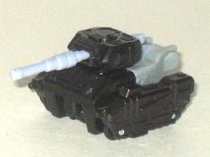
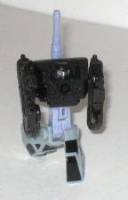
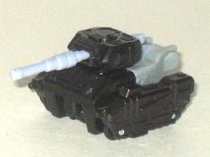
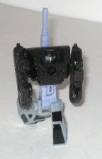
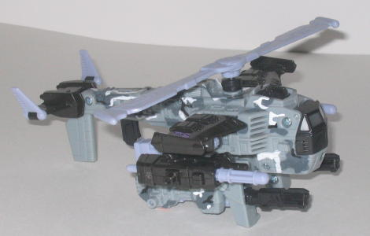
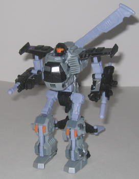

Crumplezone
(Energon)
Crumplezone
(Energon)
 
Allegiance : Minicon
Size : Mini-Con
Difficulty of Transformation : Very Easy
Color Scheme : Black, light gray, arctic gray-blue, and some silver
Rating : 4.2
(NOTE: Because this set is a repaint, this is not a full-blown review. This mainly covers any changes made to the set and the color scheme, and merely compares it to Armada Cyclonus w/ Crumplezone. For a review on the mold itself, read the review of Armada Cyclonus w/ Crumplezone here .)
Crumplezone
(Energon)


Allegiance
: Minicon
Size
: Mini-Con
Difficulty of Transformation
: Very
Easy
Color Scheme
: Black, light gray,
arctic gray-blue, and some silver
Rating
: 4.2
This time around, Crumplezone
has a good color scheme, per se. The black, silver, and gray by no means
go together horribly. But... he has very few paint apps on him- pretty
much just the black cockpit windows used when he combines with Cyclonus,
and the silver robot face. So he looks pretty darn dull. In fact, he's
dull to the point where I really can't say anything more about him other
than that. So... yeah.
No mold changes have
been made to Energon Crumplezone.
 Cyclonus
(Energon)
Cyclonus
(Energon)


Allegiance
: Decepticon
Size
: Deluxe
Difficulty of Transformation
: Easy
Color Scheme
: Black, light gray,
arctic gray-blue, and some white, bright orange, silver, dark gray, and
bright green
Powerlinx ports
: 4 (all gimmicked)
Rating
: 6.7
Energon Cyclonus' color
scheme is mostly the same as his partner Crumplezone's but he has quite
a few more paint apps. Most noticeable are the cool "urban/arctic camo"
paint apps on many of his light gray parts. They look really nice, and
spice up what would otherwise be, just like Crumplezone's, a rather dull
color scheme. The silver paint apps here and there also look nice, too.
I'm not so sure the same applies to his few bright orange paint apps, though--
I know it's become a staple for Cyclonus to have the ugly orange face,
but that and the couple of orange paint apps on his legs look rather out-of-place
when compared to the rest of the color scheme. One other thing that should
be noted is that the "arctic" camo on this toy is meant to "prepare" the
Cyclonus fan for his transformation into
Snow Cat
on the show, since, y'know, Snow Cat is an arctic vehicle.
No mold changes have
been made to Energon Cyclonus.
Energon Cyclonus has a very nice arctic camo color scheme, and pretty much everything except his few orange paint apps go together wonderfully. The arctic camo paint apps especially look nice. As such, I'd recommend this paint job the most out of the three this mold has had (so far), even though it costs about $2 because of the KB markup. (Although the original paint job comes pretty close.) Crumplezone is a dull little sucker this time, though.
Review by Beastbot